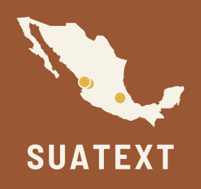

Haga clic en una palabra para ver su glosa y cuántas veces aparece en el corpus.

SUAText
Textos glosados en lenguas yutoaztecasPágina de ejemplo con datos reales. Tres textos en mexicano (náhuatl de Durango) de San Pedro Jícora, recopilados por K. Th. Preuss y publicados por Elsa Ziehm (1968), con el análisis, las glosas y las traducciones del proyecto. El análisis y los datos de cada texto (narrador, tipo de cuento) están en preparación.
No se pudieron cargar los textos.
Fuente: Preuss, Konrad Theodor. 1968. Nahua-Texte aus San Pedro Jícora in Durango. Ed. Elsa Ziehm. Berlín: Ibero-Amerikanisches Institut. Publicado por el IAI con licencia CC BY-NC-ND 3.0. Análisis, glosas y traducciones al español y al inglés: proyecto SUAHIST (ERC 101116662).